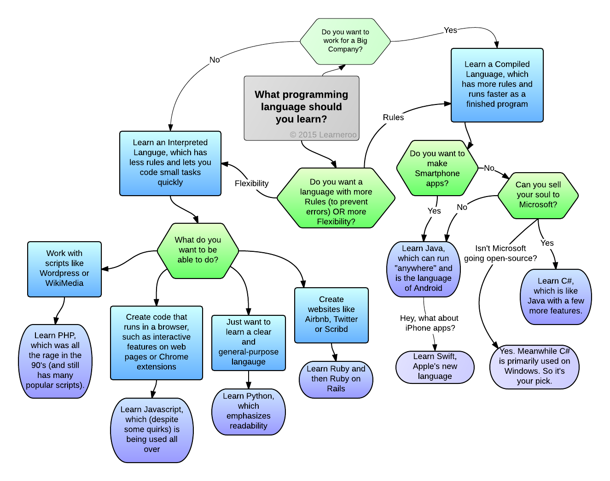

programming languages
this is main page for programming languages feed
links
- main page
- php
- Java
- C
- p4
programming languages introduction
 Computer programming language, any of varied languages for expressing a group of detailed instructions for a computer . Such instructions are often executed directly once they are within the computer manufacturer-specific numerical form referred to as machine language, after an easy substitution process when expressed during a corresponding programming language , or after translation from some “higher-level” language. Although there are many computer languages, relatively few are widely used.
Machine and assembly languages are “low-level,” requiring a programmer to manage explicitly all of a computer’s idiosyncratic features of knowledge storage and operation. In contrast, high-level languages shield a programmer from worrying about such considerations and supply a notation that's more easily written and skim by programmers.
Language types
1-Machine and assembly languages: 1-A machine language is composed of numerical codes that can be directly executed by a particular computer. The codes are strings of 0s and 1s or binary numbers (bits) that are often translated for human viewing and modification from and to hexadecimal (base 16). Machine language instructions usually use some bits, such as addition, and some of them to represent operand or the next instruction. Macro language is hard to read and write, because its codes vary from computer to computer. It does not resemble conventional math notation or human language.Montage language is one level above the language of the machine. The programmer is able to provide names for data-bearing blocks of memory, and uses short mnemonic code for instructions. You could then type 'total pay' for an instruction to add two numbers instead of '0110101100101000.'The language of assembly is intended for easy machine translation. While database blocks can be referred to by name rather than by machine addresses, assembling language does not provide a more advanced way to organize complex information. Like machine language, assembly requires detailed computer architectural knowledge. It is useful if such details are important, such as when a computer is programmed to interface with input / output devices (printers, scanners, storage devices etc.).
2-Algorithmic languages: 2-Algorithmic languages are designed to precise mathematical or symbolic computations. they will express algebraic operations in notation almost like mathematics and permit the utilization of subprograms that package commonly used operations for reuse. They were the primary high-level languages.